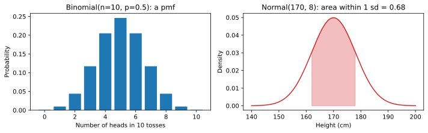
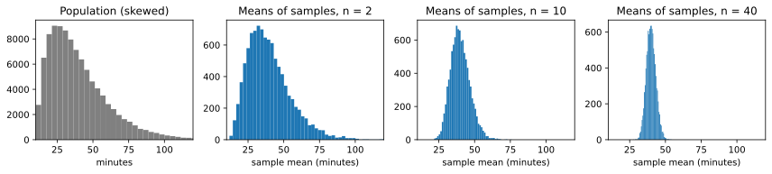

Chapter 7: Probability and Statistics for Data Science¶
Distributions, sampling, confidence intervals and hypothesis tests
Learning outcomes
After this chapter you should be able to:
- compute simple probabilities with the complement, addition and multiplication rules, and check them by simulation;
- describe the binomial, Poisson, uniform and normal distributions and use
scipy.statsto compute their probabilities; - compute and interpret expectation, variance and z-scores;
- explain sampling variation, the standard error and the central limit theorem;
- construct and correctly interpret a confidence interval for a mean, by formula and by bootstrap;
- carry out a two-sample t-test and a permutation test, and interpret a p-value correctly;
- distinguish type I and type II errors, and statistical from practical significance.
Every dataset is a sample of something larger: this year's customers stand for future customers, 200 students for students in general, ten days of tea sales for the stall's usual trade. The numbers we compute from a sample would come out differently with a different sample. Statistics is the discipline of reasoning about that variation: how much a sample result could differ from the truth, and whether a pattern in the sample is real or the kind of thing chance alone produces. This chapter introduces the probability needed for that reasoning and then the two main tools of inference, confidence intervals and hypothesis tests. Simulation is used throughout, because seeing a sampling distribution emerge from repeated random samples is the most direct way to understand it.
import numpy as np
import pandas as pd
import matplotlib.pyplot as plt
from scipy import stats
7.1 Probability¶
A probability is a number between 0 and 1 that measures how likely an event is: 0 for impossible, 1 for certain. One useful interpretation is long-run frequency: the probability that a fair die shows a six is \(1/6\) because, in a very long run of throws, about one sixth show a six.
When all outcomes are equally likely, the probability of an event is the number of outcomes in the event divided by the total number of outcomes. Three rules let you combine probabilities:
- Complement: \(P(\text{not } A) = 1 - P(A)\).
- Addition: \(P(A \text{ or } B) = P(A) + P(B) - P(A \text{ and } B)\). If \(A\) and \(B\) cannot happen together, the last term is zero.
- Multiplication for independent events: if \(A\) and \(B\) are independent (knowing one tells you nothing about the other), \(P(A \text{ and } B) = P(A) \times P(B)\).
Example 7.1: At least one six
What is the probability of at least one six in four throws of a fair die? "At least one" is easiest through the complement: the chance of no six in one throw is \(5/6\), and the throws are independent, so the chance of no six in four throws is \((5/6)^4\). Therefore
A simulation checks the algebra:
rng = np.random.default_rng(0)
throws = rng.integers(1, 7, size=(100_000, 4))
print(round(1 - (5 / 6) ** 4, 4), (throws == 6).any(axis=1).mean())
0.5177 0.51685
Conditional probability¶
The probability of \(A\) given that \(B\) has happened is written \(P(A \mid B)\) and equals
It restricts attention to the cases where \(B\) happened. Conditional probabilities are not symmetric: \(P(A \mid B)\) and \(P(B \mid A)\) can be very different, and confusing them is a classic error.
Example 7.2: A test for a rare condition
A condition affects 1% of a population. A screening test detects it in 95% of people who have it, and wrongly flags 5% of people who do not. If a person tests positive, what is the probability that they have the condition?
Think of 10,000 people. 100 have the condition, and 95 of them test positive. 9,900 do not, and 5% of them, 495, also test positive. So of the \(95 + 495 = 590\) positives, only 95 have the condition:
The test is "95% accurate", yet a positive result means only about a 16% chance of having the condition, because the condition is rare and the false positives from the large healthy group outnumber the true positives. This reasoning, formalised as Bayes' theorem, reappears in classification (Chapter 9), where precision plays the role of this 16%.
7.2 Random variables and their distributions¶
A random variable is a number determined by a random process: the number of heads in ten tosses, the number of customers arriving in an hour, the height of a randomly chosen adult. Its distribution says which values it can take and how likely each is.
A discrete random variable takes separate values (usually counts), and its distribution gives a probability to each value: the probability mass function (pmf). A continuous random variable can take any value in a range; single values have probability zero, and probabilities come from areas under a probability density function (pdf). For both, the cumulative distribution function (cdf) gives \(P(X \le x)\).
Two numbers summarise a distribution. The expectation (or mean) \(E[X]\), written \(\mu\), is the long-run average value; for a discrete variable \(E[X] = \sum_x x\,P(X = x)\). The variance \(\operatorname{Var}(X) = E[(X - \mu)^2]\), written \(\sigma^2\), is the average squared distance from the mean, and its square root \(\sigma\) is the standard deviation.
Four distributions you will meet constantly¶
| Distribution | Describes | Parameters | Mean | Variance |
|---|---|---|---|---|
| Binomial | number of successes in \(n\) independent trials, each with success probability \(p\) | \(n\), \(p\) | \(np\) | \(np(1-p)\) |
| Poisson | number of events in a fixed interval, when events occur independently at a constant average rate | \(\lambda\) | \(\lambda\) | \(\lambda\) |
| Uniform | a value equally likely to be anywhere in \([a, b]\) | \(a\), \(b\) | \((a+b)/2\) | \((b-a)^2/12\) |
| Normal | many measurements; sums and averages of many small effects | \(\mu\), \(\sigma\) | \(\mu\) | \(\sigma^2\) |
Table 7.1. Four common distributions.
scipy.stats provides each distribution as an object with methods pmf (or pdf), cdf, ppf (the inverse of the cdf: the value below which a given fraction lies), mean, std and rvs (random samples).
coin = stats.binom(n=10, p=0.5)
print("P(exactly 5 heads) =", round(coin.pmf(5), 4))
print("P(at most 2 heads) =", round(coin.cdf(2), 4))
print("P(8 or more heads) =", round(1 - coin.cdf(7), 4))
print("mean, sd:", coin.mean(), round(coin.std(), 3))
calls = stats.poisson(mu=4) # on average 4 calls an hour
print("P(no calls in an hour) =", round(calls.pmf(0), 4))
print("P(more than 8 calls) =", round(1 - calls.cdf(8), 4))
P(exactly 5 heads) = 0.2461
P(at most 2 heads) = 0.0547
P(8 or more heads) = 0.0547
mean, sd: 5.0 1.581
P(no calls in an hour) = 0.0183
P(more than 8 calls) = 0.0214
The probability of exactly 5 heads in 10 tosses is only about 0.25: the most likely single value is still unlikely. \(P(8 \text{ or more heads}) \approx 0.055\) is the value found by counting in Exercise 4 of Chapter 3.
fig, axes = plt.subplots(1, 2, figsize=(10, 3.2))
k = np.arange(0, 11)
axes[0].bar(k, coin.pmf(k), color="tab:blue")
axes[0].set_xlabel("Number of heads in 10 tosses")
axes[0].set_ylabel("Probability")
axes[0].set_title("Binomial(n=10, p=0.5): a pmf")
h = np.linspace(140, 200, 300)
height = stats.norm(loc=170, scale=8)
axes[1].plot(h, height.pdf(h), color="tab:red")
mask = (h >= 162) & (h <= 178)
axes[1].fill_between(h[mask], height.pdf(h[mask]), alpha=0.3, color="tab:red")
axes[1].set_xlabel("Height (cm)")
axes[1].set_ylabel("Density")
axes[1].set_title("Normal(170, 8): area within 1 sd = 0.68")
fig.tight_layout()
fig.savefig("distributions.svg")

7.3 The normal distribution and z-scores¶
The normal distribution is the symmetric bell curve of Figure 7.1. It is fixed by its mean \(\mu\) (the centre) and standard deviation \(\sigma\) (the width). Many measurements are approximately normal, and, more importantly, averages of many observations are approximately normal whatever the shape of the original data (Section 7.4).
For any normal distribution, about 68% of values lie within one standard deviation of the mean, about 95% within two (more precisely 1.96), and about 99.7% within three. This is the 68–95–99.7 rule.
z = stats.norm(0, 1) # the standard normal
for k in [1, 1.96, 2, 3]:
print(f"P(-{k} < Z < {k}) = {z.cdf(k) - z.cdf(-k):.4f}")
print("97.5th percentile:", round(z.ppf(0.975), 4))
P(-1 < Z < 1) = 0.6827
P(-1.96 < Z < 1.96) = 0.9500
P(-2 < Z < 2) = 0.9545
P(-3 < Z < 3) = 0.9973
97.5th percentile: 1.96
The z-score of a value \(x\) says how many standard deviations it lies from the mean:
z-scores put different variables on a common scale (this is the standardisation of Section 3.7). If adult heights are roughly normal with mean 170 cm and standard deviation 8 cm, a height of 186 cm has \(z = (186 - 170)/8 = 2\), and only about 2.3% of adults are taller:
print(round(1 - height.cdf(186), 4))
print(round(height.ppf(0.90), 1), "cm is the 90th percentile")
0.0228
180.3 cm is the 90th percentile
7.4 Sampling distributions and the central limit theorem¶
Suppose we want the mean of some quantity in a large population (all customers, all students), but can measure only a sample of \(n\) of them. The population mean \(\mu\) is a fixed but unknown number, a parameter. The sample mean \(\bar{x}\) is a statistic, computed from the sample, and it varies from sample to sample. The distribution of a statistic over all possible samples is its sampling distribution.
To see one, we need a population we can sample from again and again. Take delivery times that are strongly right-skewed: most deliveries take 20 to 40 minutes, a few take much longer. We simulate a population of 100,000 deliveries, then draw many samples of size \(n\) and record each sample's mean.
rng = np.random.default_rng(42)
population = rng.gamma(shape=2.0, scale=15.0, size=100_000) + 10 # minutes
print(f"population mean {population.mean():.2f}, sd {population.std():.2f}")
def sample_means(n, reps=10_000):
idx = rng.integers(0, len(population), size=(reps, n))
return population[idx].mean(axis=1)
for n in [2, 10, 40]:
m = sample_means(n)
print(f"n={n:>3}: mean of sample means {m.mean():.2f}, "
f"sd of sample means {m.std():.2f}, sigma/sqrt(n) {population.std() / np.sqrt(n):.2f}")
population mean 40.02, sd 21.33
n= 2: mean of sample means 40.40, sd of sample means 15.28, sigma/sqrt(n) 15.08
n= 10: mean of sample means 39.90, sd of sample means 6.82, sigma/sqrt(n) 6.75
n= 40: mean of sample means 40.01, sd of sample means 3.42, sigma/sqrt(n) 3.37
fig, axes = plt.subplots(1, 4, figsize=(12, 2.8))
axes[0].hist(population, bins=60, color="gray")
axes[0].set_title("Population (skewed)")
axes[0].set_xlabel("minutes")
for ax, n in zip(axes[1:], [2, 10, 40]):
ax.hist(sample_means(n), bins=50, color="tab:blue")
ax.set_title(f"Means of samples, n = {n}")
ax.set_xlabel("sample mean (minutes)")
ax.set_xlim(10, 120)
axes[0].set_xlim(10, 120)
fig.tight_layout()
fig.savefig("clt.svg")

Three facts appear in the numbers and Figure 7.2:
- The sample means are centred on the population mean. The sample mean is an unbiased estimate of \(\mu\).
- Their spread shrinks as \(n\) grows, exactly as \(\sigma / \sqrt{n}\). This quantity, the standard deviation of a statistic's sampling distribution, is called its standard error. To halve the standard error you need four times as many observations.
- Their distribution becomes normal as \(n\) grows, even though the population is skewed. This is the central limit theorem: for large enough \(n\), the mean of \(n\) independent observations from almost any population is approximately normal, with mean \(\mu\) and standard deviation \(\sigma/\sqrt{n}\).
Key idea
The central limit theorem is why the normal distribution is everywhere in statistics. We rarely know the shape of the population, but we know that averages (and many other statistics built from sums) are approximately normal, with a standard error we can estimate from the sample itself as \(s/\sqrt{n}\).
In practice \(\sigma\) is unknown and is estimated by the sample standard deviation
The divisor \(n - 1\) rather than \(n\) corrects for the fact that deviations are measured from \(\bar{x}\), which is itself fitted to the sample and so sits closer to the data than \(\mu\) does; dividing by \(n\) would underestimate \(\sigma^2\) on average. This is the ddof=1 of NumPy and the default of pandas (Section 3.6).
7.5 Confidence intervals¶
A single number such as \(\bar{x} = 41.3\) minutes says nothing about how far it might be from the truth. A confidence interval gives a range of plausible values for the parameter, together with a confidence level.
By the central limit theorem, \(\bar{x}\) lies within about 1.96 standard errors of \(\mu\) in 95% of samples. Turning this around gives the interval \(\bar{x} \pm 1.96\,\text{SE}\). Because the standard error is itself estimated from the sample, the exact recipe replaces 1.96 by a slightly larger value from the t distribution with \(n - 1\) degrees of freedom:
For large \(n\) the t value is close to 1.96; for small samples it is larger, widening the interval to allow for the extra uncertainty in \(s\).
rng = np.random.default_rng(7)
sample = rng.choice(population, size=30, replace=False)
n = len(sample)
xbar, s = sample.mean(), sample.std(ddof=1)
se = s / np.sqrt(n)
t_crit = stats.t.ppf(0.975, df=n - 1)
print(f"n={n}, mean={xbar:.2f}, s={s:.2f}, SE={se:.2f}, t={t_crit:.3f}")
print(f"95% CI: ({xbar - t_crit * se:.2f}, {xbar + t_crit * se:.2f})")
print("same with scipy:", np.round(stats.t.interval(0.95, df=n - 1, loc=xbar, scale=se), 2))
print("true population mean:", round(population.mean(), 2))
n=30, mean=39.34, s=20.02, SE=3.65, t=2.045
95% CI: (31.86, 46.81)
same with scipy: [31.86 46.81]
true population mean: 40.02
What "95% confidence" means¶
The interpretation is subtle and often stated wrongly. The population mean is fixed; it is the interval that is random, because it depends on the sample. "95% confidence" means that the method produces intervals that contain the true mean in 95% of samples. A simulation makes this concrete: draw 1,000 samples, build an interval from each, and count how many contain the true mean.
mu = population.mean()
hits = 0
for _ in range(1000):
smp = rng.choice(population, size=30, replace=False)
m, se_ = smp.mean(), smp.std(ddof=1) / np.sqrt(30)
lo, hi = m - t_crit * se_, m + t_crit * se_
hits += lo <= mu <= hi
print(hits / 1000)
0.938
About 95% of the intervals cover the truth (a little less here, because the population is so skewed that \(n = 30\) is only just large enough for the normal approximation). For any one interval we cannot know whether it is one of the lucky 95% or the unlucky 5%.
Caution: common misreadings of a confidence interval
A 95% confidence interval does not mean that 95% of the data lies in the interval (the data is far more spread out than the interval for its mean), nor that there is a 95% probability that \(\mu\) lies in this particular interval (in this framework \(\mu\) is fixed and either is or is not inside). It means the procedure captures \(\mu\) in 95% of samples. In practice, read it as "the values of \(\mu\) that are consistent with the data".
The bootstrap¶
The formula needs the sampling distribution to be roughly normal. The bootstrap is a general alternative that works for almost any statistic (a median, a ratio, a correlation) by simulation: treat the sample as a stand-in for the population, draw many resamples of the same size from it with replacement, compute the statistic on each, and take the middle 95% of the results as the interval (the percentile bootstrap).
boot_rng = np.random.default_rng(1)
boot_means = np.array([boot_rng.choice(sample, size=n, replace=True).mean() for _ in range(10_000)])
boot_medians = np.array([np.median(boot_rng.choice(sample, size=n, replace=True)) for _ in range(10_000)])
print("bootstrap 95% CI for the mean: ", np.percentile(boot_means, [2.5, 97.5]).round(2))
print("bootstrap 95% CI for the median:", np.percentile(boot_medians, [2.5, 97.5]).round(2))
bootstrap 95% CI for the mean: [32.48 46.62]
bootstrap 95% CI for the median: [25.75 42.05]
The bootstrap interval for the mean is close to the t interval, and the same three lines give an interval for the median, for which there is no simple formula.
7.6 Hypothesis tests¶
A hypothesis test asks whether a pattern in the data could plausibly be due to chance. It follows a fixed logic.
- State a null hypothesis \(H_0\), the "nothing going on" position: for example, two groups have the same population mean.
- State the alternative \(H_1\): the means differ.
- Choose a test statistic that measures how far the data departs from \(H_0\), such as the difference in sample means divided by its standard error.
- Compute the p-value: the probability, if \(H_0\) were true, of a test statistic at least as extreme as the one observed.
- A small p-value means the data would be surprising if \(H_0\) were true, which counts as evidence against \(H_0\). A conventional threshold, the significance level \(\alpha\), is 0.05: results with \(p < \alpha\) are called statistically significant.
A two-sample t-test¶
A shop tests two page layouts. Visitors were randomly shown layout A or layout B, and the time each spent on the page was recorded. Is the average time different?
rng = np.random.default_rng(21)
a = rng.normal(loc=52, scale=15, size=50).round(1) # seconds on page, layout A
b = rng.normal(loc=60, scale=15, size=50).round(1) # layout B
print(f"A: mean {a.mean():.2f}, sd {a.std(ddof=1):.2f}")
print(f"B: mean {b.mean():.2f}, sd {b.std(ddof=1):.2f}")
print(f"difference B - A: {b.mean() - a.mean():.2f} seconds")
res = stats.ttest_ind(b, a, equal_var=False)
print(f"t = {res.statistic:.3f}, p = {res.pvalue:.4f}")
A: mean 53.17, sd 14.32
B: mean 60.30, sd 12.30
difference B - A: 7.13 seconds
t = 2.669, p = 0.0089
The test statistic is
the observed difference measured in standard errors. equal_var=False gives Welch's t-test, which does not assume the two groups have the same variance and is the safer default. The p-value is small: if the layouts truly made no difference, a gap this large would arise by chance only rarely. We reject \(H_0\) and conclude that layout B holds visitors longer. The confidence interval for the difference says by how much, which is usually the more useful statement:
ci = res.confidence_interval(confidence_level=0.95)
print(f"95% CI for the difference: ({ci.low:.2f}, {ci.high:.2f}) seconds")
95% CI for the difference: (1.83, 12.43) seconds
A permutation test¶
The t-test relies on approximations. A permutation test reaches the same kind of answer by simulation and makes almost no assumptions. If \(H_0\) is true, the labels "A" and "B" are arbitrary: shuffling them should produce differences as large as the observed one quite often. So shuffle the labels many times, recompute the difference each time, and see how often a shuffled difference is at least as extreme as the real one.
observed = b.mean() - a.mean()
pooled = np.concatenate([a, b])
perm_rng = np.random.default_rng(0)
diffs = np.empty(10_000)
for i in range(10_000):
shuffled = perm_rng.permutation(pooled)
diffs[i] = shuffled[50:].mean() - shuffled[:50].mean()
p_perm = np.mean(np.abs(diffs) >= abs(observed))
print(f"observed difference {observed:.2f}, permutation p-value {p_perm:.4f}")
observed difference 7.13, permutation p-value 0.0091
The two tests agree closely. The permutation test makes the meaning of a p-value concrete: it is literally the fraction of "no-effect worlds" that look at least as extreme as ours.
Errors and power¶
A test can be wrong in two ways:
| \(H_0\) true (no effect) | \(H_0\) false (real effect) | |
|---|---|---|
| Reject \(H_0\) | Type I error (false positive), probability \(\alpha\) | correct; probability = power |
| Do not reject \(H_0\) | correct | Type II error (false negative) |
Table 7.2. The two kinds of error in a hypothesis test.
Choosing \(\alpha = 0.05\) fixes the type I error rate at 5%. The power, the probability of detecting a real effect, depends on the size of the effect, the noise, and the sample size: small samples often miss real but modest effects. A simulation shows how power grows with \(n\) for the layout example (a true difference of 8 seconds with standard deviation 15):
pw_rng = np.random.default_rng(3)
for n in [10, 20, 50, 80]:
rejections = 0
for _ in range(2000):
x = pw_rng.normal(52, 15, n)
y = pw_rng.normal(60, 15, n)
rejections += stats.ttest_ind(y, x, equal_var=False).pvalue < 0.05
print(f"n = {n:>2} per group: power about {rejections / 2000:.2f}")
n = 10 per group: power about 0.21
n = 20 per group: power about 0.38
n = 50 per group: power about 0.75
n = 80 per group: power about 0.91
With 10 visitors per group the test would miss this real effect most of the time. Our experiment, with 50 per group, had roughly a three-in-four chance of detecting it; with 80 per group the test almost always finds it. "Not significant" therefore does not mean "no effect"; it may mean "not enough data".
Caution: what a p-value is not
- It is not the probability that \(H_0\) is true. It is the probability of data this extreme if \(H_0\) were true.
- It is not a measure of the size or importance of an effect. With huge samples, trivial differences become "significant". Always report the estimated effect and its confidence interval.
- \(p = 0.049\) and \(p = 0.051\) are practically the same evidence; treating 0.05 as a cliff is a habit, not a law.
- Multiple testing: run 20 tests on pure noise at \(\alpha = 0.05\) and you expect about one "significant" result. Testing many things and reporting only the significant ones manufactures false discoveries.
Testing a relationship between two categorical variables¶
For two categorical variables, the chi-square test of independence compares the observed counts in a contingency table with the counts expected if the variables were unrelated.
table = pd.DataFrame({"bought": [48, 71], "did not buy": [152, 129]}, index=["email A", "email B"])
print(table)
chi2, p, dof, expected = stats.chi2_contingency(table)
print(f"chi2 = {chi2:.3f}, dof = {dof}, p = {p:.4f}")
print((table["bought"] / table.sum(axis=1)).round(3))
bought did not buy
email A 48 152
email B 71 129
chi2 = 5.790, dof = 1, p = 0.0161
email A 0.240
email B 0.355
dtype: float64
Email B converted 35.5% of its 200 recipients against 24% for email A, and the p-value says a difference this large would be unusual if the emails were equally effective.
7.7 Summary¶
Summary
- Probabilities combine by the complement, addition and multiplication rules; conditional probability restricts to the cases where the condition holds, and \(P(A \mid B) \ne P(B \mid A)\) in general.
- A distribution gives the probabilities of a random variable's values: binomial and Poisson for counts, uniform and normal for continuous values.
scipy.statsgives their pmf/pdf, cdf, ppf and random samples. - In a normal distribution about 68%, 95% and 99.7% of values lie within 1, 2 and 3 standard deviations; a z-score measures distance from the mean in standard deviations.
- A statistic varies from sample to sample. The sample mean is unbiased, its standard error is \(\sigma/\sqrt{n}\), and by the central limit theorem its distribution is approximately normal for large \(n\).
- A 95% confidence interval, \(\bar{x} \pm t\,s/\sqrt{n}\), comes from a method that captures the parameter in 95% of samples. The bootstrap gives intervals for almost any statistic.
- A hypothesis test computes a p-value: the probability, under \(H_0\), of a result at least as extreme as observed. Welch's t-test and the permutation test compare two means; the chi-square test compares categorical proportions.
- Type I errors are false positives (rate \(\alpha\)); type II errors are missed effects. Power rises with sample size and effect size.
- Report effect sizes with confidence intervals, not only p-values; beware multiple testing.
7.8 Exercises¶
Exercise 1
Two fair dice are thrown. What is the probability that the total is at least 10? Check your answer by simulation.
Answer
The pairs with a total of 10, 11 or 12 are (4,6), (5,5), (6,4), (5,6), (6,5), (6,6): 6 of the 36 equally likely pairs, so the probability is \(6/36 = 1/6 \approx 0.167\).
rng = np.random.default_rng(5)
t = rng.integers(1, 7, size=(100_000, 2)).sum(axis=1)
print((t >= 10).mean())
0.16754
Exercise 2
A call centre receives on average 3 calls per minute, and calls arrive independently. Using a Poisson model, find the probability of (a) no calls in a minute and (b) more than 5 calls in a minute.
Answer
calls = stats.poisson(3)
print(round(calls.pmf(0), 4), round(1 - calls.cdf(5), 4))
0.0498 0.0839
(a) \(e^{-3} \approx 0.0498\); (b) about 0.084.
Exercise 3
Exam marks are roughly normal with mean 60 and standard deviation 12. What fraction of students score above 84? What mark separates the top 10%?
Answer
84 is two standard deviations above the mean, so about 2.3% score above it. The top 10% starts at the 90th percentile:
marks = stats.norm(60, 12)
print(round(1 - marks.cdf(84), 4), round(marks.ppf(0.9), 1))
0.0228 75.4
Exercise 4
A sample of 25 values has mean 48 and standard deviation 10. Compute a 95% confidence interval for the population mean. How would the interval change with a sample of 100 values with the same mean and standard deviation?
Answer
for n in [25, 100]:
se = 10 / np.sqrt(n)
t = stats.t.ppf(0.975, df=n - 1)
print(n, round(t, 3), round(48 - t * se, 2), round(48 + t * se, 2))
25 2.064 43.87 52.13
100 1.984 46.02 49.98
With \(n = 25\) the interval is about (43.9, 52.1). With \(n = 100\) the standard error halves (from 2 to 1) and the t value shrinks slightly, so the interval is about (46.0, 50.0), a little less than half as wide.
Exercise 5
A study reports "no significant difference (p = 0.32)" between two teaching methods, based on 8 students per method. Does this show the methods are equally effective?
Answer
No. A large p-value means the data is consistent with no difference, not that there is none. With 8 students per group the power is low, so even a real, meaningful difference would usually go undetected. The confidence interval for the difference would be wide, including both zero and sizeable effects in either direction; that interval is the honest summary.
Exercise 6
A researcher tests 40 different foods for an association with headaches, using \(\alpha = 0.05\) each time, and reports the two foods with \(p < 0.05\). If no food truly has any effect, how many "significant" results would be expected? What should the researcher do?
Answer
About \(40 \times 0.05 = 2\) false positives are expected even if no food has any effect, so finding two is exactly what chance predicts. The researcher should report all 40 tests, adjust for multiple testing (for example, the Bonferroni correction tests each at \(\alpha/40\)), and treat the two findings as hypotheses to check in new data.
7.9 Quiz¶
Check your understanding of Chapter 7
Exercise 1
Which distribution models the number of heads in 20 tosses of a coin?
- Poisson
- binomial
- uniform
- normal
Answer
binomial
Exercise 2
About what fraction of a normal distribution lies within two standard deviations of the mean?
- 0.68
- 0.90
- 0.95
- 0.997
Answer
0.95
Exercise 3
If the sample size is multiplied by 4, the standard error of the mean is
- unchanged
- halved
- quartered
- doubled
Answer
halved
Exercise 4
The central limit theorem says that, for large samples, the sample mean is approximately
- equal to the population mean
- normally distributed
- uniformly distributed
- skewed like the population
Answer
normally distributed
Exercise 5
A p-value is the probability of
- the null hypothesis being true
- data at least as extreme as observed if the null hypothesis is true
- the alternative being true
- making a type II error
Answer
data at least as extreme as observed if the null hypothesis is true
Exercise 6
Rejecting a true null hypothesis is a
- type I error
- type II error
- correct decision
- power
Answer
type I error
Exercise 7
In a bootstrap, resamples are drawn from the sample with or without replacement?
Answer
with / with replacement
Exercise 8
What does the bootstrap make possible that the t formula does not?
- intervals for statistics such as the median
- exact p-values
- larger samples
- removing bias from the data
Answer
intervals for statistics such as the median